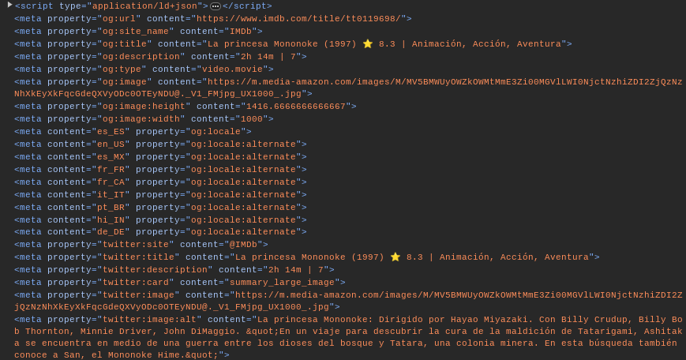

- Protocol amb conjunt de marques que es poden afegir a les pàgines web per proporcionar informació detallada sobre el contingut d'aquestes quan es comparteixen en les xarxes socials com Facebook.
- Quan enviem un enllaç, són les dades que es mostren si esperes uns segons (imatge i descripció d'interés)
- Codi comú a trobar en pàgines web (al head de l'index):
<meta property="og:title" content="Títol de la pàgina">
<meta property="og:" content="my_namespace:my_type">
<meta property="og:" content="URL_de_la_imatge">
<meta property="og:" content="URL_de_la_pàgina">
- Aquesta etiqueta ajuda a proporcionar l'informació precisa i estructurada sobre el contingut del nostre enllaç
